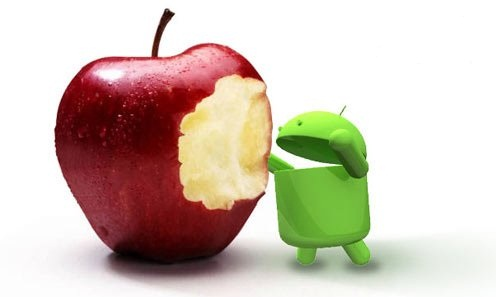

Los leales "fanáticos de Apple" formados por Jobs esperan con ansias la conferencia de nuevos productos de otoño de Apple el 9 de septiembre, pero esto no impide que las tropas del campo Android acorralen a Apple en el dorado septiembre.
Durante la feria IFA (Internationale Funkausstellung) de Berlín, Alemania, a principios de septiembre, los principales fabricantes del campo Android como Samsung, Sony, Huawei, TCL y HTC presentaron sucesivamente sus nuevas generaciones de teléfonos inteligentes insignia. Unos días antes, fabricantes como OPPO y Meizu también habían lanzado de manera prominente sus nuevos teléfonos en el mercado nacional.
La aparición simultánea de los nuevos teléfonos insignia del campo Android parece decirles a los usuarios de "doble teléfono" y a los cada vez más numerosos consumidores de Android: ¡Vamos, necesitas cambiarte a un nuevo teléfono de pantalla grande!

Android acorrala a Apple
Aunque su encanto sigue intacto, la superioridad de Apple en el mercado mundial de teléfonos inteligentes se está desvaneciendo. Según los últimos datos del mercado de teléfonos inteligentes del segundo trimestre de 2014 publicados por IDC, los envíos de iPhone aumentaron un 12,7% interanual (35,2 millones de unidades en el trimestre), pero en comparación con el crecimiento del 33,3% del campo Android (255,3 millones de unidades en el trimestre), el crecimiento del primero no es especialmente rápido.
Lo más urgente es que en el segundo trimestre de este año, la cuota de mercado de iPhone en el mercado general de teléfonos inteligentes cayó del 13% del mismo período del año anterior al 11,7%, mientras que la cuota de mercado de los teléfonos Android aumentó del 79,6% al 84,7% en el segundo trimestre del año pasado.
Unos días después, Apple volverá a ser el centro de atención de todos: celebrará una gran conferencia de nuevos productos en California, EE. UU., donde se espera que se presenten dos nuevos modelos de iPhone. Según algunas informaciones, la nueva generación de iPhone finalmente tendrá la pantalla grande tan esperada, y la pantalla grande está haciendo que muchos teléfonos inteligentes Android, incluidos los de Samsung, se vendan muy bien.
Para tomar la delantera, los fabricantes de teléfonos del campo Android deben llevar sus productos insignia al mercado antes de que Apple lance la nueva generación de iPhone. Sin embargo, la diferencia de tiempo entre el lanzamiento y la disponibilidad de los nuevos productos de ambos campos no es mucha; quién gane a más consumidores depende en última instancia de los propios productos.
El fuerte general Samsung envejece
Como el único fabricante de hardware Android que puede contrarrestar a Apple en términos de marca, escala de ventas y beneficios, los nuevos productos que Samsung lanzó en el dorado septiembre son extremadamente llamativos.
En vísperas de la inauguración de la IFA, Samsung lanzó el teléfono inteligente insignia Galaxy Note 4, así como tres nuevos productos bastante singulares: el Galaxy Note Edge con pantalla lateral curva, el reloj inteligente Gear S y el casco de realidad virtual Gear VR.
Lanzar dos nuevos teléfonos al mismo tiempo es algo extremadamente raro en la estrategia de productos de Samsung en los últimos años. Algunos análisis consideran que es una ofensiva de la familia Note de Samsung en un momento en que los teléfonos de pantalla grande están por todas partes y, sobre todo, cuando está a punto de lanzarse la nueva generación de iPhone de pantalla grande.
Actualmente, Samsung, que aún mantiene su posición dominante en el mercado, ya ha entrado en modo de crisis. "Las señales que comenzaron a mostrar la decadencia de Nokia en el pasado ahora han aparecido sutilmente en Samsung", opinó un profesional de la industria telefónica que prefirió permanecer en el anonimato. Bajo el efecto combinado de múltiples factores como la falta de innovación de productos y la inestabilidad de los canales, el margen de beneficio y la cuota de mercado de los teléfonos Samsung ya han comenzado a encogerse; debe demostrar al exterior que todavía no ha envejecido.
Por eso, en un momento en que ya hay pocas innovaciones importantes en el mercado mundial de teléfonos inteligentes que sorprendan a los consumidores, Samsung aún quiere transmitir un mensaje al exterior: en innovación, diseño y satisfacción del usuario, Samsung siempre ha estado a la vanguardia.
En cuanto a los dos últimos teléfonos lanzados, el mayor atractivo del Galaxy Note 4 es su pantalla 2K de 5,7 pulgadas, así como las funciones de carga rápida y ahorro de energía extremo aprendidas de los fabricantes chinos. El Note Edge, que se centra en el concepto de "pantalla curva", es bastante controvertido; queda por ver en el mercado cuán práctico es realmente y si puede convertirse en un as bajo la manga para impulsar el rendimiento de los teléfonos Samsung.
Las marcas chinas atacan con fuerza
Aparte de Samsung, que ocupa el primer lugar en el campo Android, el teléfono inteligente insignia anual lanzado por Sony, el Sony Z3, también es bastante destacado. Se sabe que el Sony Z3 continúa con el diseño exterior de la serie Z de teléfonos inteligentes y las ventajas icónicas de Sony en audio, video y fotografía, y además añade la función de control remoto para jugar a PS4.
En la feria IFA de este año, lo que atrajo más la atención que Samsung y Sony fueron los nuevos teléfonos del contingente chino.
En la tarde del 4 de septiembre, hora local de Alemania, Huawei presentó dos nuevos teléfonos inteligentes insignia: el Ascend Mate 7 y el Ascend G7. Entre ellos, el Ascend Mate 7, equipado con el procesador de ocho núcleos HiSilicon Kirin 925 de Huawei, es un teléfono de pantalla grande de 6 pulgadas con cuerpo totalmente metálico, y la tecnología de reconocimiento de huellas dactilares es también uno de sus grandes atractivos.
Para Huawei, que está en plena transición de B2B a B2C y construyendo una marca de consumo, los nuevos teléfonos lanzados en Europa en los últimos dos años son especialmente importantes. Según Yu Chengdong, CEO de la división de dispositivos de consumo de Huawei, los teléfonos Huawei no solo necesitan aumentar su escala, sino también fortalecer la marca, y así mejorar la rentabilidad.
Esa misma noche, TCL Communication, que ha tenido un desempeño muy fuerte en el mercado europeo, lanzó el nuevo teléfono inteligente de pantalla grande Hero2 y la nueva tableta Hero8. Guo Aiping, CEO de TCL Communication, dijo que la compañía espera vender 29,9 millones de teléfonos inteligentes en 2014, elevando la proporción de teléfonos inteligentes al 50,2% de sus ventas totales de teléfonos. En 2013, los envíos globales de teléfonos de TCL Communication fueron de 55,2014 millones de unidades, de las cuales los teléfonos inteligentes representaron solo un tercio.
Además, HTC también presentó en la IFA su primer teléfono inteligente con procesador de 64 bits de Qualcomm, el HTC Desire 820. El mayor atractivo de este teléfono es el procesador: sus cuatro núcleos de 1,5 GHz pueden encargarse de tareas múltiples exigentes, mientras que los otros cuatro núcleos de 1,0 GHz gestionan las operaciones diarias del teléfono. HTC afirma que este diseño tiene como objetivo mejorar aún más el rendimiento y la duración de la batería.
En términos generales, aunque los fabricantes Android representados por Samsung no han presentado productos muy innovadores, los nuevos productos de cada marca, ya sea en apariencia, configuración o rendimiento, han dejado poco espacio a Apple para abrirse paso. ¿Quién se convertirá en el ganador del dorado septiembre?
Fuente: Tecnología de NetEase